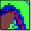

|  |
Ant ForagingBy Liviu Panait |
This is a simulation of artificial ants foraging from a nest, discovering a food source in the face of obstacles, and then establishing a trail between the nest and food source. The model uses two pheromones which set up gradients to the nest and to the food source respectively. The pheromones evaporate and diffuse as well.
A two-pheromone model is likely not biological; and the version here is an early version of our work, but later versions of the work produced a series of papers showing a strong relationship between ant pheromone algorithms and dynamic programming.
For more papers, see the EC Lab website.